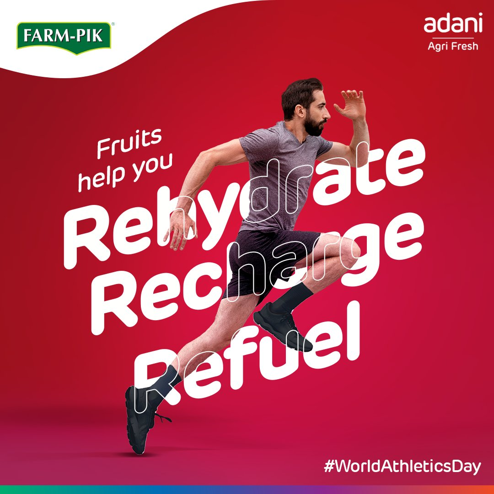
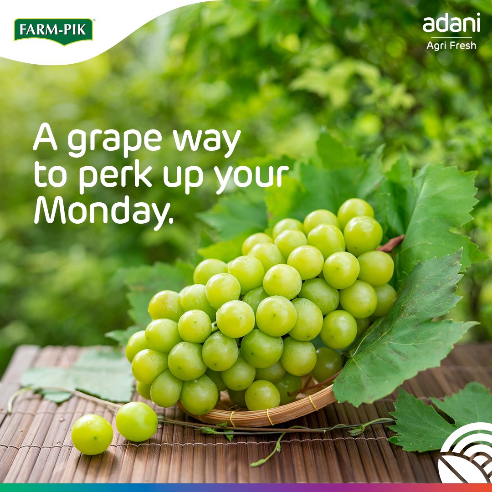
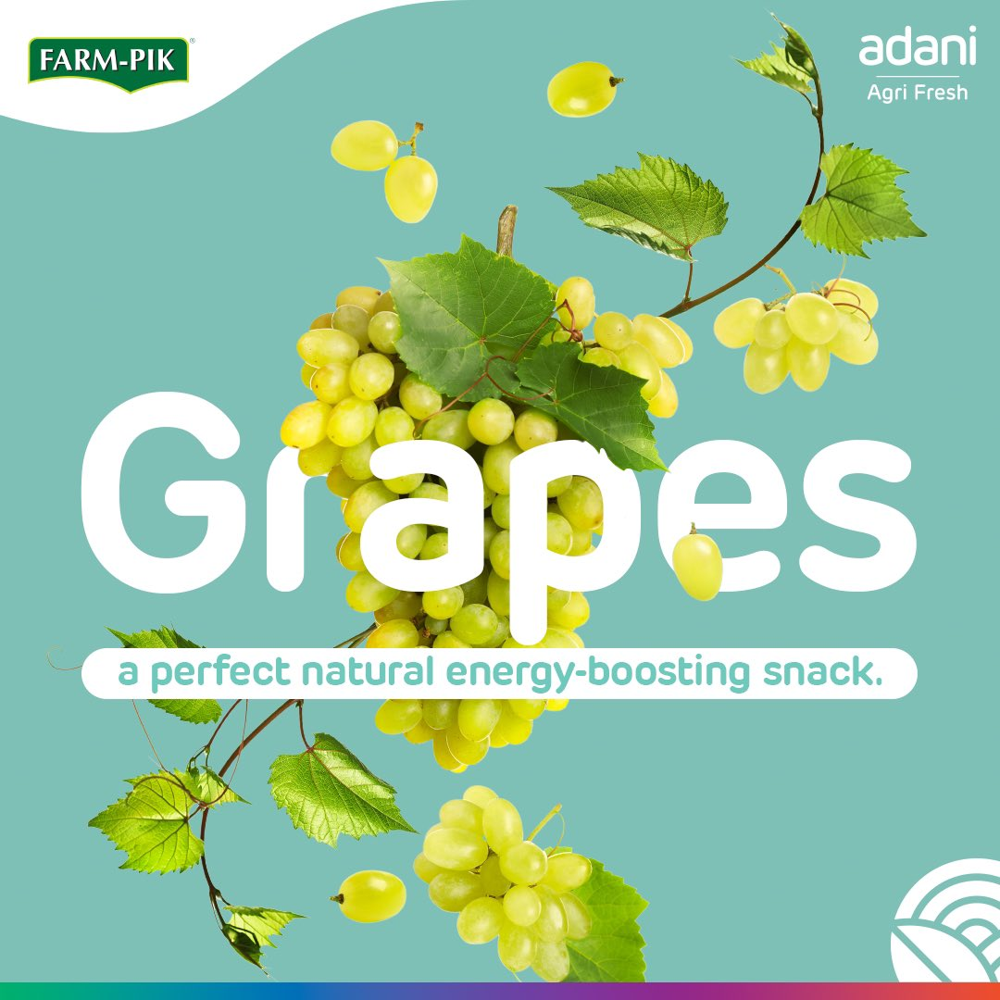
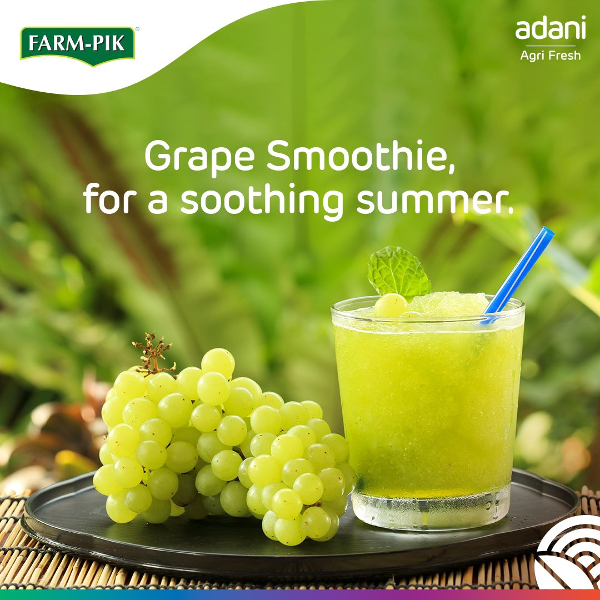

The Challenge
How do you make people want
what they already know they should eat?
Fruit is not a discovery category. Everyone knows apples are good for you. Everyone knows grapes are better than popcorn. The knowledge gap is zero. The behaviour gap is enormous.
FarmPik's content brief was not about education. It was about desire. The task was to make fresh fruit feel contemporary, shareable and culturally relevant — to sit alongside the content people actually want to see, not the content they feel obligated to engage with.
"Don't preach health. Make healthy feel like a personality."
The campaign needed to speak to urban Indian consumers in their actual contexts — not generic wellness stock photography — in a voice that was warm, witty and specific enough to feel like a brand with a point of view.
The Strategy
Meet people where they are.
Then bring the fruit.
The creative strategy was built around one principle: anchor every piece of fruit content in a real, recognisable moment. Not "eat healthy." Instead: you're binge-watching, swap the popcorn. It's Monday morning, here's a grape pun. You're watching the match, have an apple — and here's exactly what activity it's equivalent to.
01
Moment First
Every creative started with a human situation — binge watching, Monday morning, sports day, World Happiness Day — and worked backwards to the fruit. The occasion was always the hook, never the product.
02
Copy as Creative
"A grape way to perk up your Monday." "Have a break, have an apple." "Eat pomegranate, sleep great." The copy did the conceptual work. Design amplified it. Never the other way around.
03
Tone: Wit, not Wellness
No calorie counts. No immunity claims. No "boost your health" language. Every line had to earn its place by being either genuinely funny, genuinely interesting or genuinely surprising. Wellness was the subtext, never the text.
The Creative Work
The copy did the thinking.
The fruit did the talking.
The content system ran across multiple formats — product-led visuals, lifestyle photography, infographic posts and moment marketing — with one consistent thread: every line had to be the kind of thing a person would say to a friend, not read off a nutrition label.

World Athletics Day · Hero Creative
"Fruits help you Rehydrate. Recharge. Refuel." — The kinetic energy of the athlete and the graphic type doing the same job simultaneously.
Copy-led · Tactical
"Have a break, have an apple." #FruitsForFastFood
One of the strongest pieces in the campaign — a direct riff on one of the most famous taglines in advertising history, applied to fruit. The cultural reference did the engagement work. The product didn't need to explain itself.
Lifestyle · Moment
Binge watching? Munch grapes, not popcorn.
The couch-and-TV insight — that snacking is as much a ritual as a choice — positioned FarmPik grapes as the upgrade, not the sacrifice. The dark atmospheric creative reinforced the nighttime binge vibe exactly.
Product Personality
"Eat pomegranate, sleep great."
The pomegranate wearing a sleep mask is the campaign's most purely delightful creative. The fruit has been given a personality. The copy lands the benefit without a single health claim. This is how you make fruit feel contemporary.
Benefit-Led · Atmospheric
Grape vibes for a healthy heart.
The ECG aesthetic is borrowed from medical imaging but subverted into lifestyle content. The neon green line feels like a music visualiser as much as a health monitor. The creative earns the heart benefit claim through the visual rather than stating it.

Moment Marketing
"A grape way to perk up your Monday."

Product Feature
"Grapes — a perfect natural energy-boosting snack."

Seasonal · Utility
"Grape smoothie, for a soothing summer."
Data-Led · Infographic
One apple = 20 minutes of walking uphill.
The infographic format translated nutritional data into physical activity equivalents — the kind of factual reframe that people save and share. No nutrition label. No percentage claims. Just a number that makes you think differently about the apple in your bag.
Brand Campaign · #15YearsOfTrust
"Heavenly taste in every bite."
The anniversary creative anchored FarmPik's heritage in sensory language rather than corporate milestone messaging. "15 years of trust" becomes an emotional claim, not a LinkedIn announcement.
Occasion Marketing · World Happiness Day
"A bunch of health and happiness."
The double meaning of "bunch" — a bunch of grapes, a bunch of happiness — does the creative work in four words. The visual is lush and abundant. The hashtag earns the occasion without the copy doing explanatory work.
The Copy Craft
Lines that worked because
they didn't try too hard.
The most important craft decision in the campaign was what not to say. No immunity. No antioxidants. No "boost your health." Just copy that was specific, surprising and occasionally punny in the way that real people are punny about food.
"Have a break, have an apple."
#FruitsForFastFood · Cultural reference
"A grape way to perk up your Monday."
Monday moment · Wordplay
"Binge watching? Munch grapes, not popcorn."
Lifestyle swap · Evening moment
"Eat pomegranate, sleep great."
Benefit-led · Rhyme · Product personality
"Grape vibes for a healthy heart."
Health · Atmospheric visual
"A bunch of health and happiness."
World Happiness Day · Wordplay
"Heavenly taste in every bite."
#15YearsOfTrust · Anniversary campaign
"Fruits help you Rehydrate. Recharge. Refuel."
World Athletics Day · Three-beat structure
My Role
Content strategy,
copy, concept, cadence.
This was a full-ownership brief across content strategy and copy — building the system that connected the brand's product range to the cultural calendar, and the cultural calendar to the consumer's daily life.
Content Strategy
Copywriting
Concept Ideation
Moment Marketing
Brand Voice Development
Social Content Architecture
Campaign Calendar Planning
What This Work Demonstrates
Consumer copy is
the hardest brief to get right.
Built a consistent brand voice across product categories — apples, grapes, pomegranate — without the content feeling like a product catalogue.
Created a moment marketing cadence that connected to cultural occasions without forcing the product into contexts where it didn't belong.
Established copy as the primary creative driver — the headline came first, the visual followed. Every executional decision served the line, not the other way around.
Maintained zero preachy health messaging across the entire campaign. The benefits were always implied, demonstrated or reframed — never stated.
The discipline that made this work
The campaign succeeded because it respected the audience. Nobody needs to be told that fruit is good for them. They need to be reminded why they'd want it today, in this moment, when the popcorn is right there. The copy answered that question every single time — without lecturing, without data, and without ever using the word "healthy" as a noun.